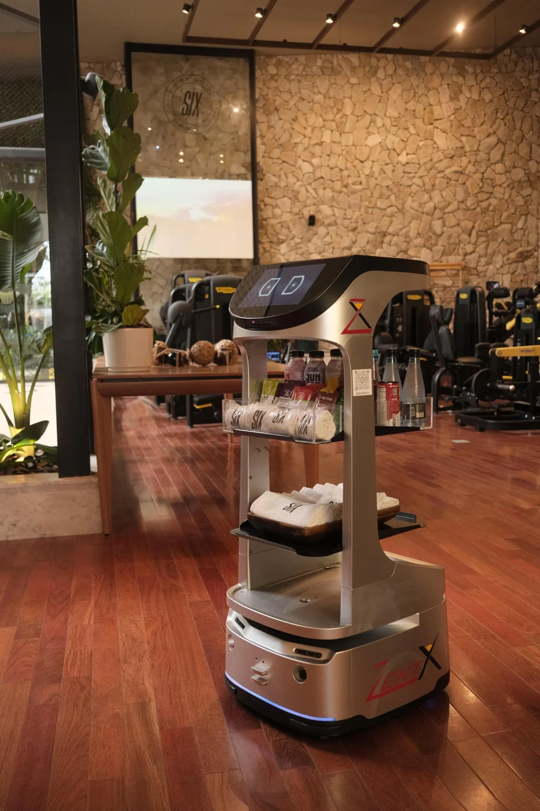
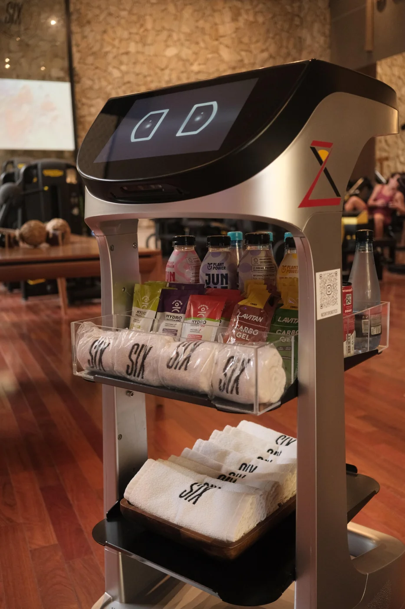

Uma presença amigável.
A expressão na tela aproxima a tecnologia de quem passa pelo espaço.
ROBÓTICA DE SERVIÇO
Uma nova presença no seu espaço.
Conheça a robótica de serviço da Zentx em uma experiência no ambiente de treino.

PRESENÇA QUE FAZ PARTE DO AMBIENTE
Entre os aparelhos, o jardim e as pausas do treino, o robô leva uma nova forma de apresentar bebidas e toalhas. Tecnologia que ganha sentido no contato com as pessoas.

Tudo à vista.
Tudo ao alcance.
A expressão na tela aproxima a tecnologia de quem passa pelo espaço.
Bebidas e toalhas organizadas em uma estrutura aberta e acessível.
O equipamento participa do ambiente de treino, entre áreas de circulação e aparelhos.
VEJA A EXPERIÊNCIA REAL
Conheça o robô no espaço, pelos registros do projeto.
Dê play para assistir.
OUTROS ÂNGULOS
Toque nas imagens para ampliar.
VAMOS CONVERSAR